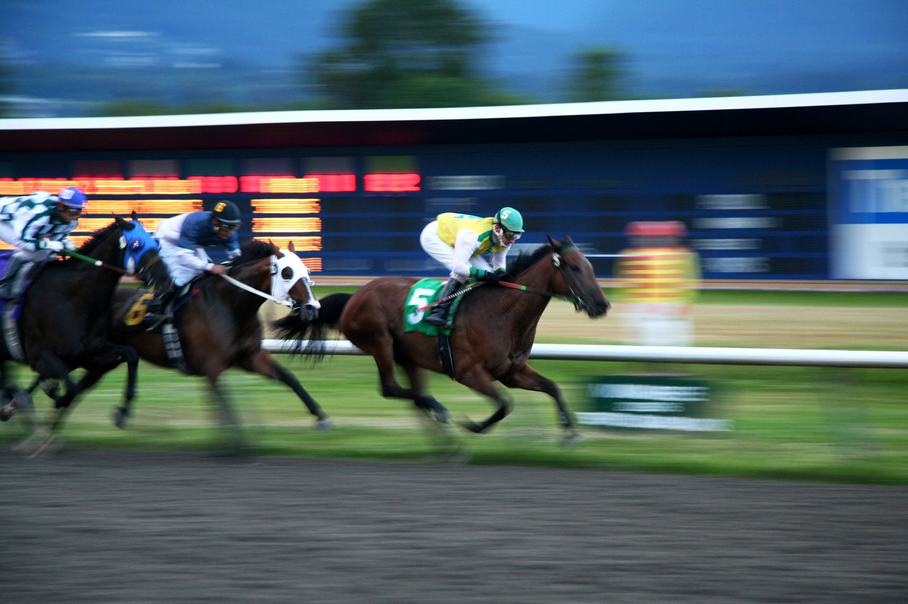

France Galop abre el 19 de noviembre la renovación de las brochures de 2027
Quienes estén suscritos en 2026 a las brochures de Plat y Obstacle de France Galop podrán renovar desde el 19 de noviembre. Los nuevos socioprofesionales también pueden darse de alta.

El trámite se hace en línea. Hay que entrar en el espacio profesional de France Galop con identificador y contraseña, abrir el menú «Gérer» y pulsar en «Abonnements». Vale tanto para renovar como para suscribirse por primera vez.
El procedimiento paso a paso figura en la «Guide Espace Pro», publicada en el sitio profesional de France Galop.
Quien no necesite la suscripción tiene otra vía: las brochures pueden descargarse libremente en la docuthèque de la web de France Galop, dentro del apartado «Programme des Courses & Agenda».
La renovación arranca el jueves 19 de noviembre de 2026 y corresponde al departamento de Calendario y Programa de Plat y Obstacle.
Fichas: Vale (Gb) (caballo)
Por Martín Larrañeta